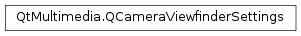

QCameraViewfinderSettings¶
Synopsis¶
Functions¶
- def
__ne__(, rhs) - def
isNull() - def
maximumFrameRate() - def
minimumFrameRate() - def
pixelAspectRatio() - def
pixelFormat() - def
resolution() - def
setMaximumFrameRate(rate) - def
setMinimumFrameRate(rate) - def
setPixelAspectRatio(horizontal, vertical) - def
setPixelAspectRatio(ratio) - def
setPixelFormat(format) - def
setResolution(arg__1) - def
setResolution(width, height) - def
swap(other)
Detailed Description¶
The
PySide2.QtMultimedia.QCameraViewfinderSettingsclass provides a set of viewfinder settings.A viewfinder settings object is used to specify the viewfinder settings used by
PySide2.QtMultimedia.QCamera. Viewfinder settings are selected by constructing aPySide2.QtMultimedia.QCameraViewfinderSettingsobject, setting the desired properties and then passing it to aPySide2.QtMultimedia.QCamerainstance using theQCamera.setViewfinderSettings()function.QCameraViewfinderSettings viewfinderSettings; viewfinderSettings.setResolution(640, 480); viewfinderSettings.setMinimumFrameRate(15.0); viewfinderSettings.setMaximumFrameRate(30.0); camera->setViewfinderSettings(viewfinderSettings);Different cameras may have different capabilities. The application should query the camera capabilities before setting parameters. For example, the application should call
QCamera.supportedViewfinderResolutions()before callingPySide2.QtMultimedia.QCameraViewfinderSettings.setResolution().See also
-
class
PySide2.QtMultimedia.QCameraViewfinderSettings¶ -
class
PySide2.QtMultimedia.QCameraViewfinderSettings(other) Parameters: other – PySide2.QtMultimedia.QCameraViewfinderSettingsConstructs a null viewfinder settings object.
Constructs a copy of the viewfinder settings object
other.
-
PySide2.QtMultimedia.QCameraViewfinderSettings.isNull()¶ Return type: PySide2.QtCore.boolIdentifies if a viewfinder settings object is uninitalized.
Returns true if the settings are null, and false if they are not.
-
PySide2.QtMultimedia.QCameraViewfinderSettings.maximumFrameRate()¶ Return type: PySide2.QtCore.qrealReturns the viewfinder maximum frame rate in frames per second.
-
PySide2.QtMultimedia.QCameraViewfinderSettings.minimumFrameRate()¶ Return type: PySide2.QtCore.qrealReturns the viewfinder minimum frame rate in frames per second.
-
PySide2.QtMultimedia.QCameraViewfinderSettings.__ne__(rhs)¶ Parameters: rhs – PySide2.QtMultimedia.QCameraViewfinderSettingsReturn type: PySide2.QtCore.bool
-
PySide2.QtMultimedia.QCameraViewfinderSettings.pixelAspectRatio()¶ Return type: PySide2.QtCore.QSizeReturns the viewfinder pixel aspect ratio.
-
PySide2.QtMultimedia.QCameraViewfinderSettings.pixelFormat()¶ Return type: PySide2.QtMultimedia.QVideoFrame.PixelFormatReturns the viewfinder pixel format.
-
PySide2.QtMultimedia.QCameraViewfinderSettings.resolution()¶ Return type: PySide2.QtCore.QSizeReturns the viewfinder resolution.
-
PySide2.QtMultimedia.QCameraViewfinderSettings.setMaximumFrameRate(rate)¶ Parameters: rate – PySide2.QtCore.qrealSets the viewfinder maximum frame
ratein frames per second.If the maximum frame
rateis equal to the minimum frame rate, the frame rate is fixed. If not, the actual frame rate fluctuates between the minimum and the maximum.If the given
rateequals to0, the backend makes an optimal choice based on the supported frame rates and the other viewfinder settings.See also
PySide2.QtMultimedia.QCameraViewfinderSettings.maximumFrameRate()PySide2.QtMultimedia.QCameraViewfinderSettings.setMinimumFrameRate()QCamera.supportedViewfinderFrameRateRanges()
-
PySide2.QtMultimedia.QCameraViewfinderSettings.setMinimumFrameRate(rate)¶ Parameters: rate – PySide2.QtCore.qrealSets the viewfinder minimum frame
ratein frames per second.If the minimum frame
rateis equal to the maximum frame rate, the frame rate is fixed. If not, the actual frame rate fluctuates between the minimum and the maximum.If the given
rateequals to0, the backend makes an optimal choice based on the supported frame rates and the other viewfinder settings.See also
PySide2.QtMultimedia.QCameraViewfinderSettings.minimumFrameRate()PySide2.QtMultimedia.QCameraViewfinderSettings.setMaximumFrameRate()QCamera.supportedViewfinderFrameRateRanges()
-
PySide2.QtMultimedia.QCameraViewfinderSettings.setPixelAspectRatio(horizontal, vertical)¶ Parameters: - horizontal –
PySide2.QtCore.int - vertical –
PySide2.QtCore.int
This is an overloaded function.
Sets the
horizontalandverticalelements of the viewfinder’s pixel aspect ratio.- horizontal –
-
PySide2.QtMultimedia.QCameraViewfinderSettings.setPixelAspectRatio(ratio) Parameters: ratio – PySide2.QtCore.QSizeSets the viewfinder pixel aspect
ratio.
-
PySide2.QtMultimedia.QCameraViewfinderSettings.setPixelFormat(format)¶ Parameters: format – PySide2.QtMultimedia.QVideoFrame.PixelFormatSets the viewfinder pixel
format.If the given
formatis equal toQVideoFrame.Format_Invalid, the backend uses the default format.See also
PySide2.QtMultimedia.QCameraViewfinderSettings.pixelFormat()QCamera.supportedViewfinderPixelFormats()
-
PySide2.QtMultimedia.QCameraViewfinderSettings.setResolution(width, height)¶ Parameters: - width –
PySide2.QtCore.int - height –
PySide2.QtCore.int
This is an overloaded function.
Sets the
widthandheightof the viewfinder resolution.- width –
-
PySide2.QtMultimedia.QCameraViewfinderSettings.setResolution(arg__1) Parameters: arg__1 – PySide2.QtCore.QSizeSets the viewfinder
resolution.If the given
resolutionis empty, the backend makes an optimal choice based on the supported resolutions and the other viewfinder settings.If the camera is used to capture videos or images, the viewfinder resolution might be ignored if it conflicts with the capture resolution.
See also
PySide2.QtMultimedia.QCameraViewfinderSettings.resolution()QVideoEncoderSettings.setResolution()QImageEncoderSettings.setResolution()QCamera.supportedViewfinderResolutions()
-
PySide2.QtMultimedia.QCameraViewfinderSettings.swap(other)¶ Parameters: other – PySide2.QtMultimedia.QCameraViewfinderSettingsSwaps this viewfinder settings object with
other. This function is very fast and never fails.
© 2018 The Qt Company Ltd. Documentation contributions included herein are the copyrights of their respective owners. The documentation provided herein is licensed under the terms of the GNU Free Documentation License version 1.3 as published by the Free Software Foundation. Qt and respective logos are trademarks of The Qt Company Ltd. in Finland and/or other countries worldwide. All other trademarks are property of their respective owners.